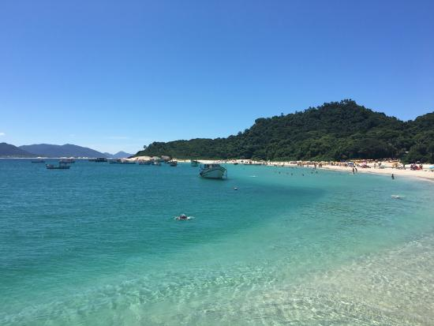

Florianópolis, often referred to as "Floripa," is a captivating city located in southern Brazil. Nestled on the island of Santa Catarina and surrounded by the shimmering waters of the Atlantic Ocean, Florianópolis is renowned for its stunning beaches, breathtaking landscapes, and vibrant culture. This enchanting destination seamlessly blends urban amenities with natural beauty, making it a paradise for travelers seeking an ideal combination of relaxation and excitement.
Florianópolis boasts over 40 pristine beaches, each with its unique charm and character. From popular spots like Praia Mole and Joaquina, known for their excellent surfing conditions, to tranquil getaways like Lagoinha do Leste and Naufragados, where you can escape the crowds and immerse yourself in nature, the island offers a beach experience for every preference.
